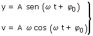
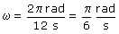
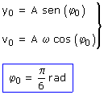

|
La gráfica parece la representación de una onda pero no lo es porque el eje de abscisas es tiempo y no distancia al foco a) Ecuaciones del movimiento:  La posición y del móvil varia entre -4 y 4 mm por tanto la amplitud es: A = 4 mm Para determinar el período hay
que ver el tiempo transcurrido entre dos situaciones iguales (Misma posición
y velocidad), no es obligatorio que las situaciones correspondan a un
pico. Observa que la situación inicial, t = 0, se repite exactamente en t = 12 s, por tanto T = 12 s  Para determinar la fase inicial hay que observar la situación inicial en la gráfica. Evidentemente y0 = 2 mm. En el instante t = 0, la pendiente de la gráfica es positiva (Crece) luego la velocidad inicial es positiva (Otra forma de verlo: en el instante inicial el cuerpo va desde y = 2 hacia y = 4) Datos: t =0, y0 = 2 mm, v0 Positiva  Ecuación del movimiento:
|